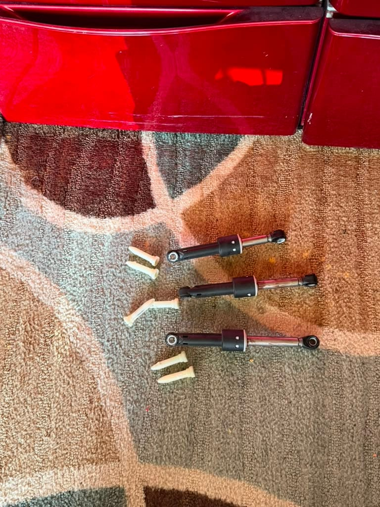

Some of these fixes take five minutes and cost nothing. Others need a technician and a few parts. We'll go in order, from the free checks you can do yourself right now to the internal repairs that call for a pro. Work through them top to bottom and you'll usually find the culprit before you get halfway down.
1. An Unbalanced Load
This is the number one reason a washer shakes, and the easiest to rule out. When heavy items like towels, jeans, or a comforter clump to one side of the drum, the machine can't distribute the weight evenly during the high-speed spin. The drum wobbles, and the whole cabinet shakes with it.
Pause the cycle, open the door, and redistribute everything by hand. Washing a single bulky item? Toss in a couple of towels to balance it out. If the shaking stops after you spread the load, that was your answer. Front-load and high-efficiency top-load machines are especially sensitive to this because they spin much faster than older models.
2. The Machine Isn't Level
A washer has to sit dead level on all four feet or it will rock under load. Laundry rooms and garage installs in Fountain Valley often have slightly uneven concrete or tile, and even a small tilt lets the machine bounce during spin.
Check it with a bubble level on top of the machine, front to back and side to side. Most washers have adjustable front feet you turn to raise or lower each corner, plus a lock nut you tighten once it's set. Rear self-leveling feet usually settle on their own if you tip the machine forward and set it back down. A rock-solid, non-wobbling cabinet is the goal.
3. Shipping Bolts Left In (New Installs)
If your washer has shaken hard since the day it was delivered, this is almost certainly it. Front-load washers ship with transit bolts running through the back panel that lock the drum in place so it can't bounce during shipping. They have to come out before the first wash.
Look at the back of the machine for two to four large bolts. Remove them with a wrench and store them somewhere safe, you'll want them again if you ever move the washer. A drum that was bolted solid for transport and then run with the bolts still in will shake violently and can damage itself, so this one is worth checking right away.
4. Worn Shock Absorbers or Dampers
This is the big one on front-load washers that have a few years of laundry behind them. Your machine's outer tub hangs on shock absorbers (also called dampers) that soak up the motion of the spinning drum. Over time the damping wears out, and once it does, the drum slams around instead of settling smoothly. The result is loud banging and heavy vibration during spin, usually getting worse as the spin speeds up.

The red LG washer in the photos above came in for exactly this. The customer's machine had started walking across the laundry room floor during spin. We pulled the worn dampers, replaced the full set, and the banging was gone. On most front-loaders the shocks are swapped in a matched set rather than one at a time, so the drum's suspension stays even side to side.
You can get a rough read on this yourself: with the machine unplugged, push the drum down by hand. If it drops and bounces back freely instead of sinking slowly, the dampers have lost their resistance. Actually replacing them means getting into the cabinet, which is where a technician comes in.
5. Broken Suspension Springs (Top-Load) or Worn Bearings
Top-load washers use suspension springs and support rods instead of dampers to steady the tub. When a spring stretches out or a support rod pad wears down, the tub tilts and knocks against the cabinet during spin. Replacing a spring or rod set brings it back to center.
A deeper cause on any washer is worn drum bearings. When bearings fail, you'll hear a loud grinding or rumbling roar during spin, often alongside the shaking, and sometimes a bit of rust-colored water. Bearing replacement is a bigger job because it means splitting the drum, so it's worth having diagnosed before you decide whether to repair or replace an older machine.
6. Loose Counterweight or Cabinet Hardware
Washers carry a heavy concrete or cast counterweight bolted to the tub to keep it stable. If those mounting bolts work loose over years of vibration, the weight shifts and the machine thumps hard during spin. It's a straightforward fix, a technician re-torques or replaces the hardware, but it's not something to leave loose, because a shifting counterweight accelerates wear on everything around it.
What a Shaking-Washer Repair Looks Like in Fountain Valley
When you book washer repair in Fountain Valley with Universal Appliances Repair, the technician will:
- Rule out the free causes first, load balance, leveling feet, and shipping bolts, so you never pay for parts you don't need
- Test the tub suspension by hand and check the shock absorbers, springs, support rods, and bearings
- Inspect the counterweight bolts and cabinet hardware for anything that has vibrated loose
- Give you a clear repair estimate before replacing anything
- Complete most repairs same-day, shock absorbers, springs, and leveling feet are stocked on the vehicle for the major brands
Most vibration repairs in Fountain Valley wrap up in one to two hours. Brands we service include LG, Samsung, Whirlpool, Maytag, GE, Bosch, Kenmore, and Electrolux.